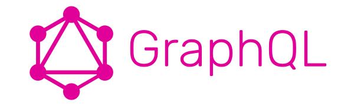
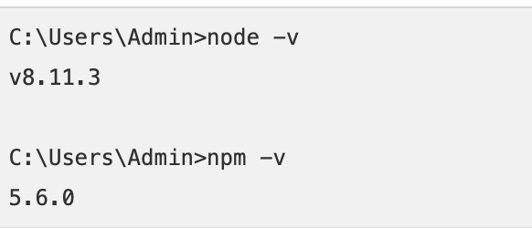
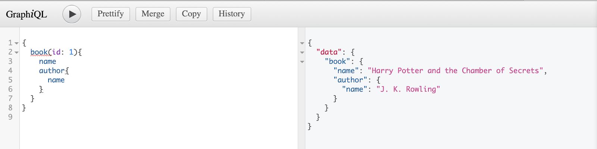

Last Updated: 15-07-2019

The root folder of project can be named as graphqltut.
Open the folder using visual studio code.
$ mkdir graphqltut
$ cd graphqltut
Create a package.json file which will contain all the dependencies of the GraphQL server application.
$ npm init -y
***NOTE: In the package.json file change the main from index.js to server.js***
Install the dependencies by using the command as given below.
$ npm i express express-graphql graphql
$ npm i --save-dev nodemon
Next in the package.json file change the scripts to the following.
"Scripts": {
"devStart": "nodemon server.js"
}
Inside the server.js type the following code so that we can start our server.
const express = require('express')
const expressGraphQL = require('express-graphql')
const {
GraphQLSchema,
GraphQLObjectType,
GraphQLString,
GraphQLList,
GraphQLInt,
GraphQLNonNull
} = require('graphql')
const app = express()
app.use('./graphql', expressGraphQL({
schema: schema,
graphiql: true
}))
app.listen(5000., () => console.log('server running'))
Next we can test if it works by executing the following command in the terminal.
$ npm run devStart
This serves as a dummy data for testing purposes.
const authors = [
{ id: 1, name: 'J. K. Rowling' },
{ id: 2, name: 'J. R. R. Tolkien' },
{ id: 3, name: 'Brent Weeks' }
]
const books = [
{ id: 1, name: 'Harry Potter and the Chamber of Secrets', authorId: 1 },
{ id: 2, name: 'Harry Potter and the Prisoner of Azkaban', authorId: 1 },
{ id: 3, name: 'Harry Potter and the Goblet of Fire', authorId: 1 },
{ id: 4, name: 'The Fellowship of the Ring', authorId: 2 },
{ id: 5, name: 'The Two Towers', authorId: 2 },
{ id: 6, name: 'The Return of the King', authorId: 2 },
{ id: 7, name: 'The Way of Shadows', authorId: 3 },
{ id: 8, name: 'Beyond the Shadows', authorId: 3 }
]
First we create the BookType variable.
This will be called later on by our query function to get all the book data.
In this case only 3 fields are used (ID, Name, and Author ID).
const BookType = new GraphQLObjectType({
name: 'Book',
description: 'This represents a book written by an author',
fields: () => ({
id: { type: GraphQLNonNull(GraphQLInt) },
name: { type: GraphQLNonNull(GraphQLString) },
authorId: { type: GraphQLNonNull(GraphQLInt) },
author: {
type: AuthorType,
resolve: (book) => {
return authors.find(author => author.id === book.authorId)
}
}
})
})
Next we need to create the AuthorType variable
Same purpose as the BookType above.
The fields used for the author is just (Name and ID).
const AuthorType = new GraphQLObjectType({
name: 'Author',
description: 'This represents an author of a book',
fields: () => ({
id: { type: GraphQLNonNull(GraphQLInt) },
name: { type: GraphQLNonNull(GraphQLString) },
books: {
type: new GraphQLList(BookType),
resolve: (author) => {
return books.filter(book => book.authorId === author.id)
}
}
})
})
Next we create the RootQueryType variable.
Type the following code below.
const RootQueryType = new GraphQLObjectType({
name: 'Query',
description: 'Root Query',
fields: () => ({
book: {
type: BookType,
description: 'A Single Book',
args: {
id: { type: GraphQLInt }
},
resolve: (parent, args) => books.find(book => book.id === args.id)
},
books: {
type: new GraphQLList(BookType),
description: 'List of All Books',
resolve: () => books
},
authors: {
type: new GraphQLList(AuthorType),
description: 'List of All Authors',
resolve: () => authors
},
author: {
type: AuthorType,
description: 'A Single Author',
args: {
id: { type: GraphQLInt }
},
resolve: (parent, args) => authors.find(author => author.id === args.id)
}
})
})
Next we create the RootMutationType variable.
The purpose of this is the same as POST, PUT, DELETE on a REST API server.
const RootMutationType = new GraphQLObjectType({
name: 'Mutation',
description: 'Root Mutation',
fields: () => ({
addBook: {
type: BookType,
description: 'Add a book',
args: {
name: { type: GraphQLNonNull(GraphQLString) },
authorId: { type: GraphQLNonNull(GraphQLInt) }
},
resolve: (parent, args) => {
const book = { id: books.length + 1, name: args.name, authorId: args.authorId }
books.push(book)
return book
}
},
addAuthor: {
type: AuthorType,
description: 'Add an author',
args: {
name: { type: GraphQLNonNull(GraphQLString) }
},
resolve: (parent, args) => {
const author = { id: authors.length + 1, name: args.name }
authors.push(author)
return author
}
}
})
})
Finally we need to create a Schema and use that schema.
const schema = new GraphQLSchema({
query: RootQueryType,
mutation: RootMutationType
})
Finally now we run the server and test the query.
$ npm run devStart
Once the server started open up localhost:5000/graphql
Then test by running a query like so.

And there you have it. GraphQL allows you to query the exact type of data that you need, which makes it much more efficient than using a REST API.
***NOTE: This is a simple version of setting up a GraphQL server***
For more information please visit the link below.
https://www.youtube.com/watch?v=ZQL7tL2S0oQ&t=654s
https://github.com/WebDevSimplified/Learn-GraphQL/blob/master/server.js